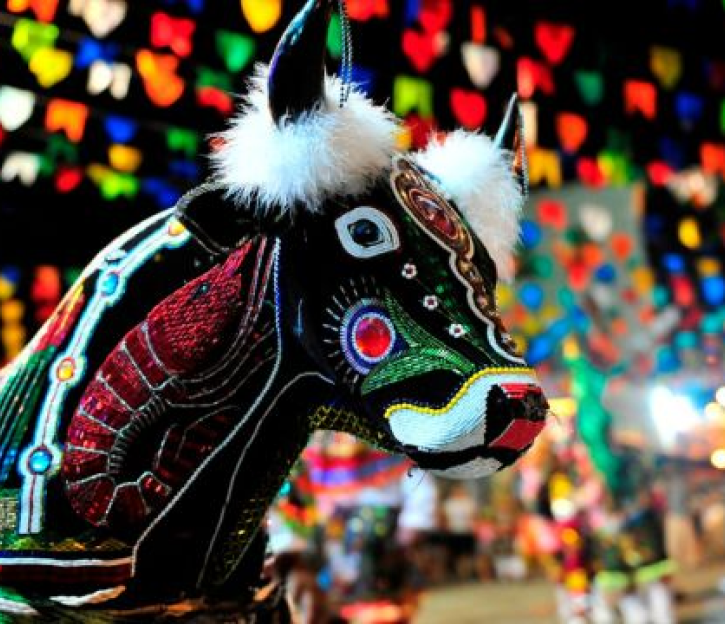

Quem somos?
Bumbatech é uma empresa sediada no Maranhão, que busca desenvolver jogos que proporcionem uma experiência imersiva, voltada para a cultura do Maranhão.
O que é Ritmos da Ilha?
Na famosa ilha de São Luís, as grandes lendas estão indo atrás de possíveis candidatos para dar continuidade aos seus legados depois que sumirem da imaginação das pessoas.


Seu trabalho é disputar um duelo de música com elas e provar que você é digno de passar a palavra das lendas para as gerações futuras, garantindo que seu legado nunca será esquecido.